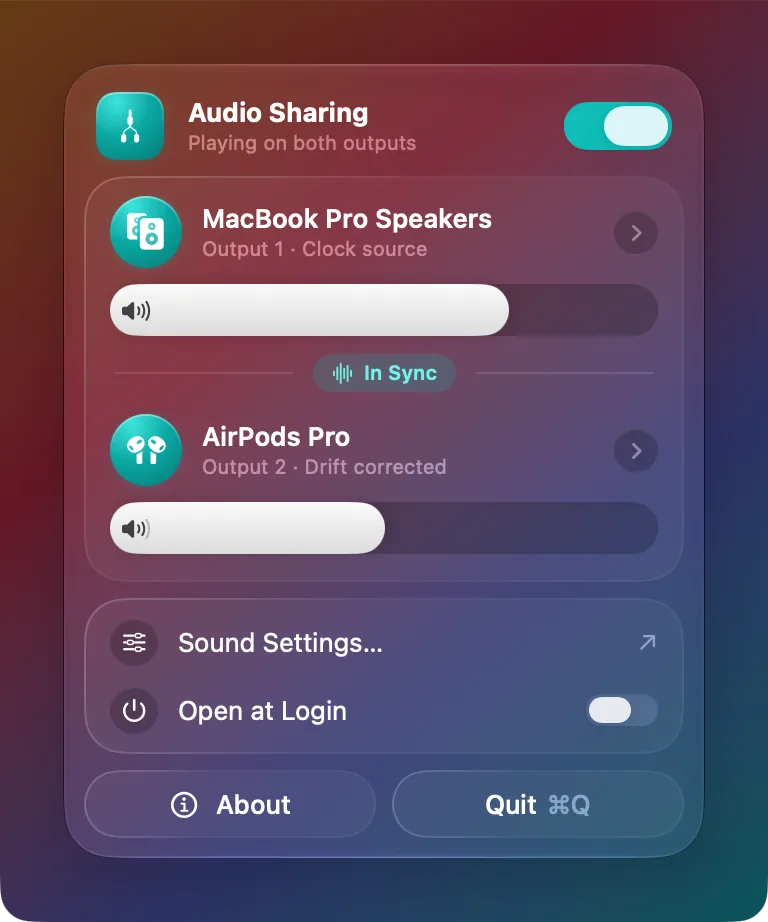

Play your Mac's audio on two outputs at once.
Duophonic lives in the menu bar and sends sound to two devices together: two pairs of AirPods, headphones and speakers, or any two outputs. One switch, both in sync.
Download for Mac How to use itFree and open source (MIT). Requires macOS 26.1 or later.

Two AirPods, one Mac
Watch a film on a plane or a train with someone else, each with your own AirPods or Bluetooth headphones.
Stays in sync
Built on Core Audio. The second output is drift compensated, so the two don't wander apart during long sessions.
Volume per device
A slider for each output, for devices that support software volume. Turn one up without the other.
Switch while playing
Swap either output without stopping the music. Devices that disconnect rejoin automatically when they come back.
Cleans up after itself
Turning it off, quitting or picking another output in Control Center restores your previous output and removes the temporary device.
Small and private
A sandboxed menu bar app with no account, no tracking and no network access. The source is on GitHub.